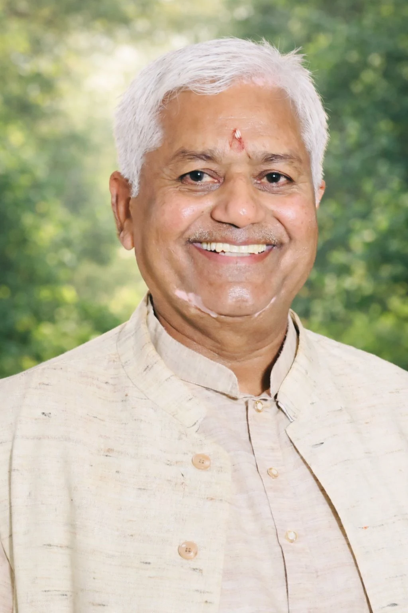
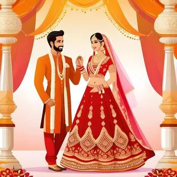
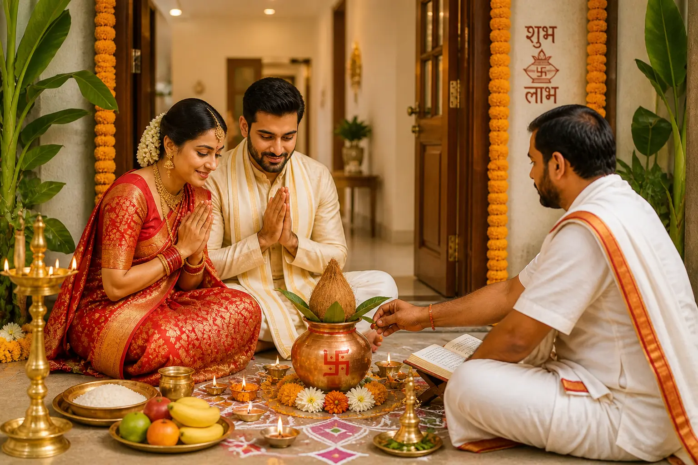
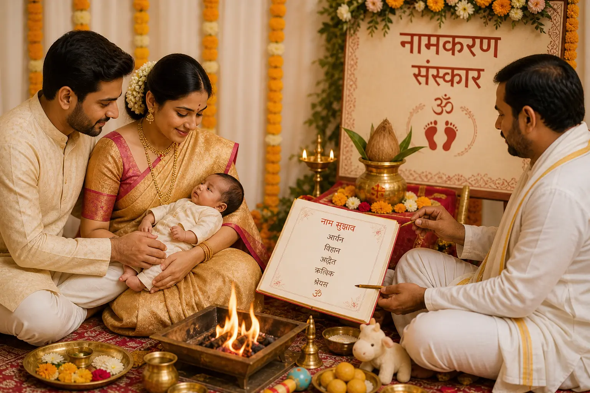
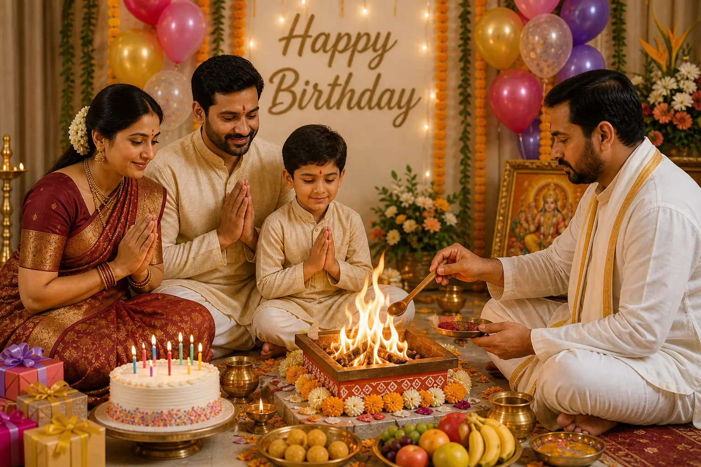
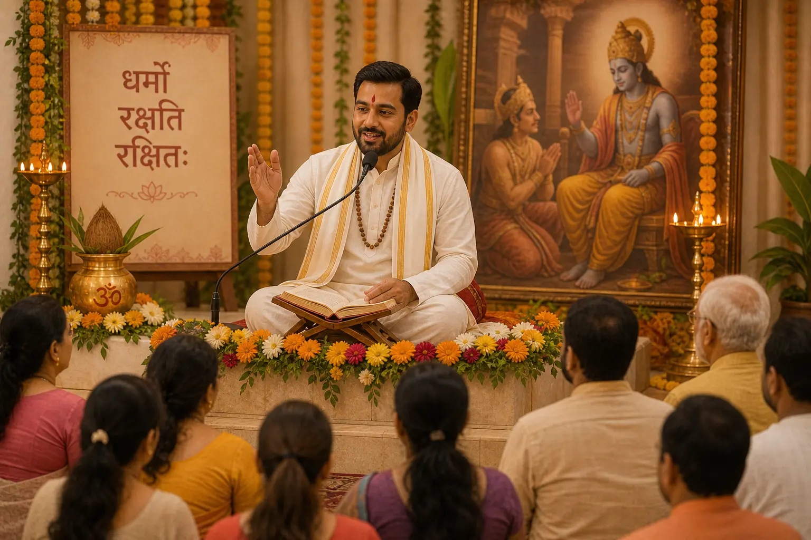
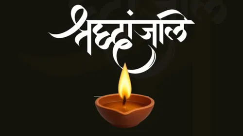

Explore
Review the relevant puja or sanskar page.
Delivering Spiritual Guidance and Performing Sacred Rituals with Purity, Tradition, and Dedication

Vedic ceremonies and guidance
Trusted Vedic Pandit for All Religious Ceremonies
Pandit Jai Prakash Shastri is presented as the family priest of India’s 14th President, Shri Ram Nath Kovind Ji, with over 30 years of experience. His listed ceremonies include marriage rituals, Namkaran, Yagya, birthdays, Griha Pravesh and Pravachan.

Perform your wedding rituals with complete Vedic traditions for a blessed and harmonious married life.
Explore →
Conduct Griha Pravesh and Sthapna rituals to bring positivity, peace, and prosperity into your new home.
Explore →Experience all important Hindu Sanskars performed with proper rituals to guide every stage of life spiritually.
Explore →
Celebrate your child’s naming ceremony with sacred Vedic rituals and blessings for a bright future.
Explore →
Mark your birthday with Vedic puja and havan for health, success, and divine blessings.
Explore →
Listen to spiritual discourses and gain knowledge of dharma, values, and Vedic teachings.
Explore →
Celebrate every Hindu festival with proper rituals to invite peace, prosperity, and divine grace.
Explore →
Perform Shanti rituals to remove negativity and bring peace, balance, and harmony to your life.
Explore →Years of dedication in performing authentic Vedic rituals with purity and tradition.
Years of Experience
Pujas Performed
Families Served
Ritual Types Covered
We bring tradition, trust and professionalism together.
All ceremonies are conducted as per ancient scriptures.
Pandit Ji is available at your location for all rituals and ceremonies.
Easy scheduling for your convenience, including weekends and festivals.
Get complete support and guidance for rituals and traditions.
Assistance with samagri and full puja arrangements if required.
Available for services across cities and nearby regions.
What people say about our services
"Best Pandit Ji. Everything done perfectly."
Rohit Sharma ⭐⭐⭐⭐⭐"Very professional and knowledgeable."
Amit Verma ⭐⭐⭐⭐⭐"Highly recommended for all puja services."
Neha Gupta ⭐⭐⭐⭐⭐"Performed rituals with full dedication."
Vikas Singh ⭐⭐⭐⭐⭐"Very calm and experienced Pandit Ji."
Priya Mehta ⭐⭐⭐⭐⭐"Best Pandit Ji. Everything done perfectly."
Rohit Sharma ⭐⭐⭐⭐⭐"Very professional and knowledgeable."
Amit Verma ⭐⭐⭐⭐⭐A clear starting point
Explore the available information and contact WedMePandit when you are ready to discuss your family’s requirements.
Review the relevant puja or sanskar page.
Provide the ceremony, preferred date, location and traditions.
Continue the enquiry by phone or WhatsApp.
Helpful answers
Explore Vivah, Griha Pravesh, Namkaran, Havan, Yagya, festival puja and other listed ceremonies.
Open a service page, then use the contact form, phone or WhatsApp to share your requirements.
No. Availability and arrangements are confirmed separately after discussion.
Share the ceremony, preferred date, location and relevant family tradition.
Yes. The blog contains educational guides about Vedic ceremonies.
Visit the gallery to see Hindu ceremony and ritual photographs.
Explore the services or contact WedMePandit with your ceremony details.